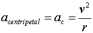
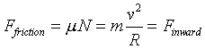
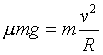
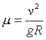
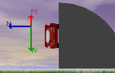
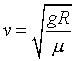
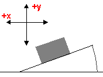

Lesson - Car on a Banked Road
This lesson uses the applet Car on a Banked Road to simulate the motion
of a car turning a corner.
Preamble
This lesson will teach you about the the physics
involved when a car negotiates a corner.
The applet should be open. The step-by-step instructions
in this lesson are to be carried out in the applet. You may need to toggle back
and forth between instructions and applet if your screen space is limited.
What keeps your car on the road when turning a corner?
Why do you skid when you hit an icy patch? Why are the corners of most highway
interchanges sloped or banked? These are some of the questions that will be
explored in this lesson. In particular you will learn about:
- the normal force and the role it plays in the physics
of a car in a turn
- the frictional force and how it acts
- the force(s) needed to deflect the car in a circular
path around a corner
Getting to Know the Applet - Car on a Banked Road
Spend a little time "playing" with the applet.
Try adjusting the speed of the car, coefficient of friction and angle of the
roadway (the "bank angle"). Observe under what conditions the car
will either skid inward or outward and what you need to do to counteract this.
Once you have run the applet a few times you should explore
the forces acting on the car. Toggle the force button and show the free-body
diagram. Again observe how the forces change with varying speed, coefficient
of friction or bank angle. When you are ready, please answer the following:
- Explain why the free-body diagrams only show three
forces acting on the car (We are ignoring air resistance here)
- What force or forces cause the car to round the corner
and in what direction do these forces act?
- During an outward skid, does a force cause the car
to skid outward? If so, identify this force?

Car on a Level Corner
The simplest case to consider involves a car turning
at a normal, flat intersection. Here the bank angle is zero degrees so make
sure that the angle slider on the applet is set at 0°.
As you learned earlier, there are three forces that are
important in understanding the motion of a car as it rounds a corner:
- the gravitational force or weight of the car acting
straight down
- the normal force or response of the road against the
car acting at right angles to the road surface
- the force of friction
It is easy to see in this case that the frictional force is
the only force that can act inward to supply the force needed to deflect the
car from its original direction of motion into a circular turn. Let's investigate
this a little closer by looking at the force needed to deflect the car moving
at 15 m/s around a corner of radius 80 m. Consider these steps:
- Get the acceleration :
Remember that the acceleration of a body moving in a
circular path is given by the expression for centripetal acceleration:
.
Find the magnitude of the acceleration that the car will undergo and specify
the direction in which the car accelerates.
- If we assign a mass of 1000 kg to the car, calculate the
size of the force needed to deflect the car in this circular path (Hint: Use
Newton's 2nd Law)
- In question #5 you calculated the size of the force needed
to deflect the car in a circular path. This force is produced by the force
of friction between the tires and the road. The road "pushes" the
car inward, allowing it to deflect. As long as we can develop enough frictional
force we can safely turn the corner. Experiment with the applet and adjust
the coefficient of friction. Note how the frictional force changes as you
do this. What is the smallest value (approximately) that the coefficient of
friction can be to prevent skidding?
- Since we know that the force of friction is responsible
for deflecting the car inward can equate the force of friction and the inward
force. This gives us:
and since on a level surface ,
we get.
This can be simplified to give .
Calculate the minimum coefficient of friction for which the car can safely
turn the corner. Verify this using the applet.
- For normal, dry road conditions m
= 0.80. Under these conditions what is the fastest safe speed for turning
a corner of radius 60.0 m? Does the mass of the car matter?
Car on a Vertical Corner!
What happens if, instead of no bank angle you enter a corner
banked at 90°! This is definitely in the "don't try this at home"
category but is a situation sometimes seen at carnivals and exhibitions!
|  |
The following figure is a screen capture of the
applet with the angle slider set at 90°. Please adjust the applet
now. Set the angle at 90°, the coefficient
of friction at 0.50 and leave the radius of turn at 60 m. Note the relationship
between the vectors and particularly between the Weight vector and the
Frictional Force vector.
|
- Draw a Free Body Diagram in the space provide on the right
and carefully label the forces.
- Which force supplies the inward force needed to propel the car around
the vertical corner?
- Look carefully at the figure shown above for the car rounding a 90°
turn. Would the car be able to turn without skidding for the case shown
here? Explain your answer.
|
|
- It is clear from both the figure shown above and your FBD
that the Frictional Force must be equal to the Weight of the car to
prevent sliding. We can write this as: .
We also know that the Normal force must be responsible for the inward
force. Show that the minimum velocity the car must have to safely (without
skidding) round the corner is given by.
|
Car on a Banked Corner (optional)
Now consider the case when the corner is not flat but
tilted or banked at a small angle. To help visualize this set
the applet with the following values:
- speed = 0 m/s
- m = 0.85
- q = 20°
Also, turn on the Free Body Diagram options so
that you ca see the FBD in "real time".
- Press the play button. The car (speed = 0 m/s) just "sits
there". Explain why the Frictional Force appears as it does in
the FBD. In particular, why does it point in the direction that it does?
Now begin to increase the velocity of the car and note how the frictional
force changes. Does the direction of the frictional force ever change?
If so, why does this happen?
|
- Adjust the speed of the car to equal 30.0 m/s. In the space
on the right, draw a FBD. Carefully label the forces and assume that
the ordinary x-y axes define the reference frame for this diagram but
choose the direction toward the center of the turn as positive x.
- Draw in all components that act in either the x or y directions (use
the applet to assist you in visualizing them). It's tricky but carefully
label where angle q is on your FBD. As a
hint you should observe that the normal force tips away from vertical
by the same amount that the curve is banked.
- How big is the inward force needed to deflect the car around the corner?
Calculate this, show your work and confirm it using the applet.
|

put diagram here
|
- Show that the following equation correctly represents all
relevant forces in the x-direction:
- Show that the following equation correctly represents all relevant
forces in the y-direction:

- Show that this leads to the following condition:
 which can be rearranged to give you and expression for the fastest possible
speed you can have before skidding. Find this speed and verify this
result by using the applet.
which can be rearranged to give you and expression for the fastest possible
speed you can have before skidding. Find this speed and verify this
result by using the applet.
- Show that there is a speed for which the car would be able to travel
around the banked curve even is there was no friction. Calculate the
size of this speed and try to show this using the applet.
|